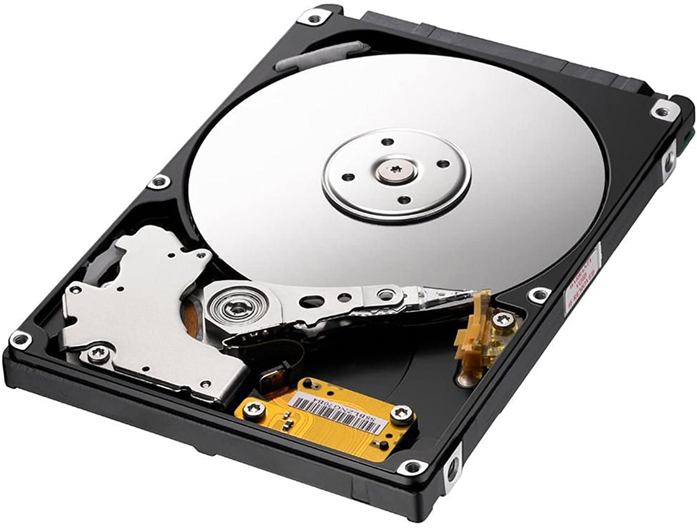
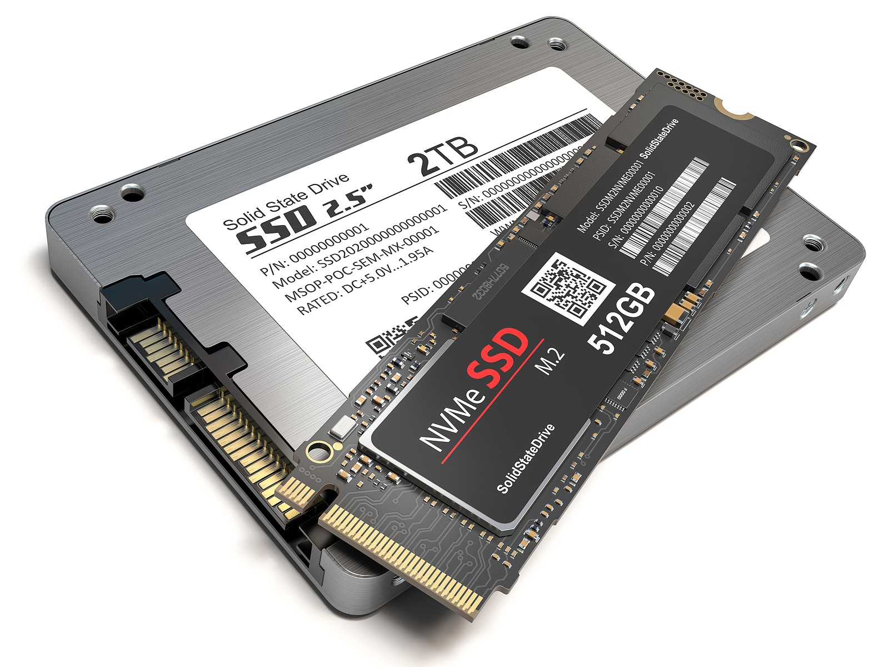

La tecnología SSD (solid-state disk drive) permite tener un disco duro sin partes móviles. El concepto en este caso también es bastante antiguo, ya que se basa en tecnología de los años 50 aplicada para memoria RAM.
|  |  |
| Con parte móvil | Sin parte móvil |
El problema de usar esta tecnología para almacenar datos de forma permanente es que requieren alimentación eléctrica para mantener la información, y por tanto, si no hay alimentación eléctrica los datos se pierden. De ahí que a la memoria RAM se la llame “volátil”. Al poco tiempo de surgir la memoria RAM se desarrollaron métodos para evitar este problema, aunque con precios muy altos y con tiempos de vida muy cortos que limitaron su expansión.
Ambos problemas están ya prácticamente solucionados. De hecho los tiempos de vida (ciclos de lectura y escritura) de discos duros SDD son equivalentes a los de los HDD. Los precios de los SSD van cayendo con el tiempo y parece lógico pensar que poco a poco los SSD desplazarán del mercado a los discos duros convencionales.